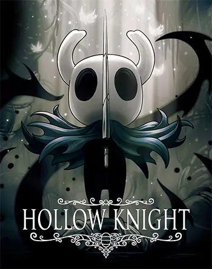
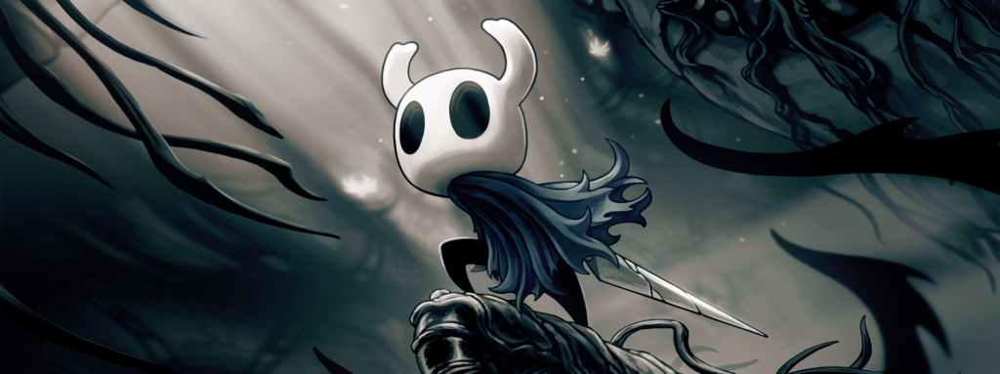

Hollow Knight is an action-adventure video game that is not only in the Metroidvania style but also in 2D and was originally released in 2017 by independent developer, Team Cherry.
The characters within this game are based off of insects. The protaganist itself is an insectoid knight that explores the diseased ridden remains of the bug kingdom; Hallownest. Moreover, the knight goes ahead and fights the infected bugs that cross their path who have lost all of their autonomy and control of their bodies and now are nothing but zombie like creatures in this world of anthropomorphistic creepy-crawlies.
